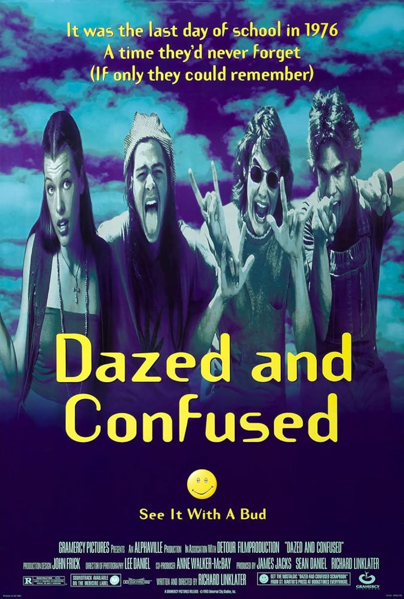

Dazed & Confused
This one is for all my nostalgia movie watchers. Based in the 70's of Austin, Texas, this beloved comedy coming of age film follows a group of rowdy high school teenagers and their last day of school all taking place in one day. It explores adolescent freedom and rebellion while also giving us a look back at the past. Every character is distinct and different from one another from potheads to football players and all the way down to incoming freshmen about to enter high school.
We are given a roughly accurate depiction of what it was like to be in Texas high school in the 70s as all the characters face their own dilemmas but are able to blend well with one another making us feel familiar with them. This movie works because it looks upon its characters with understanding that all their disobedience comes from the fact that they are in a stage of their life where they are still figuring everything out. Transitioning from child to adult they are stuck with the choice of choosing freedom or sticking to the strict rules society is held by. Each character faces this question in their own different ways and metaphors when looking deeper into the film.
Full of unforgettable dialogue, soundtrack, visuals, and well known cast "Dazed and Confused" is an amazing 'hangout' movie, it lacks plot and a strong narrative giving you a "just vibe" feeling when watching. It's not a movie that serves as a lesson or looking for, so if you are into movies with a suspenseful story line then this might not be the film for you but don't knock it until you give it a shot. It's a fun lovingly made time capsule of the American youth from the 70's that everyone should give a watch to.

Filed under Coming of Age